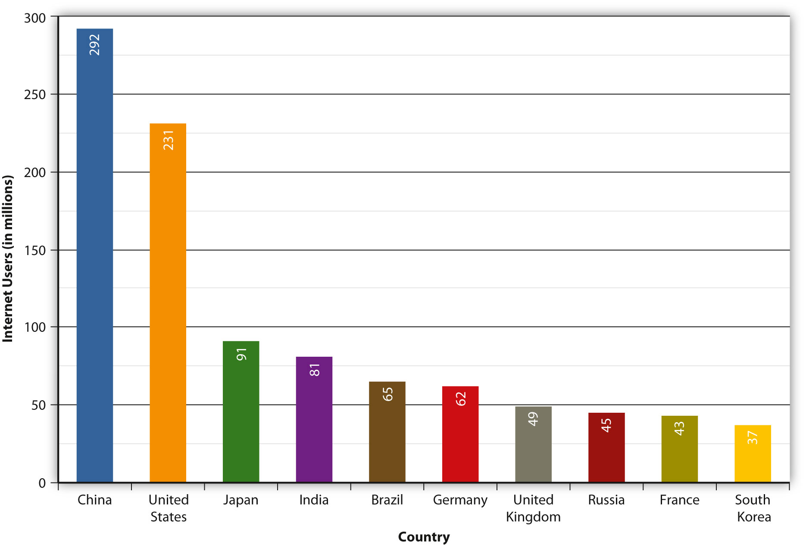
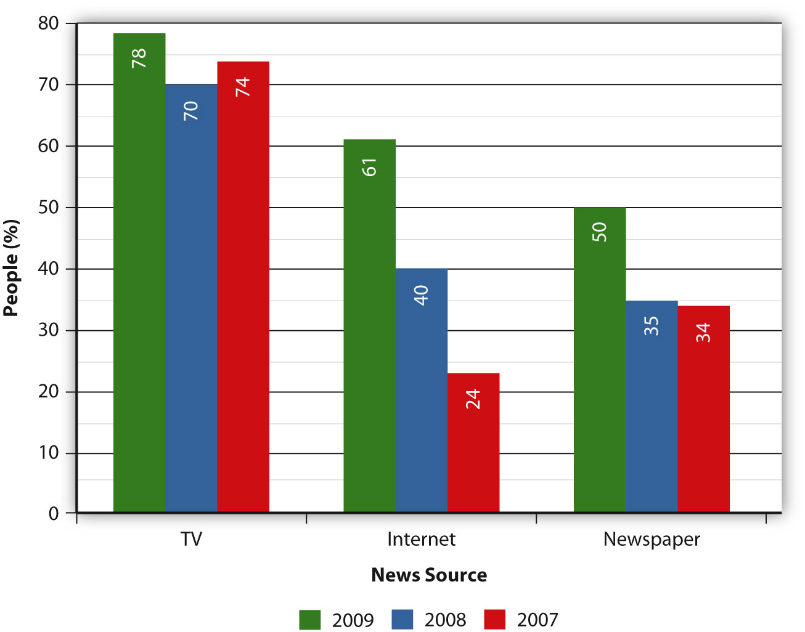

It’s in the name: World Wide Web. The Internet has broken down communication barriers between cultures in a way that could only be dreamed of in earlier generations. Now, almost any news service across the globe can be accessed on the Internet and, with the various translation services available (like Babelfish and Google Translate), be relatively understandable. In addition to the spread of American culture throughout the world, smaller countries are now able to cheaply export culture, news, entertainment, and even propaganda.
The Internet has been a key factor in driving globalizationThe lowering of economic and cultural impediments to communication and commerce between countries. in recent years. Many jobs can now be outsourced entirely via the Internet. Teams of software programmers in India can have a website up and running in very little time, for far less money than it would take to hire American counterparts. Communicating with these teams is now as simple as sending emails and instant messages back and forth, and often the most difficult aspect of setting up an international video conference online is figuring out the time difference. Especially for electronic services such as software, outsourcing over the Internet has greatly reduced the cost to develop a professionally coded site.
The increase of globalization has been an economic force throughout the last century, but economic interdependency is not its only by-product. At its core, globalization is the lowering of economic and cultural impediments to communication between countries all over the globe. Globalization in the sphere of culture and communication can take the form of access to foreign newspapers (without the difficulty of procuring a printed copy) or, conversely, the ability of people living in previously closed countries to communicate experiences to the outside world relatively cheaply.
Television, especially satellite television, has been one of the primary ways for American entertainment to reach foreign shores. This trend has been going on for some time now, for example, with the launch of MTV Arabia.Tim Arango, “World Falls for American Media, Even as It Sours on America,” New York Times, November 30, 2008, http://www.nytimes.com/2008/12/01/business/media/01soft.html. American popular culture is, and has been, a crucial export.
At the Eisenhower Fellowship Conference in Singapore in 2005, U.S. ambassador Frank Lavin gave a defense of American culture that differed somewhat from previous arguments. It would not be all Starbucks, MTV, or Baywatch, he said, because American culture is more diverse than that. Instead, he said that “America is a nation of immigrants,” and asked, “When Mel Gibson or Jackie Chan come to the United States to produce a movie, whose culture is being exported?”Frank Lavin, “‘Globalization and Culture’: Remarks by Ambassador Frank Lavin at the Eisenhower Fellowship Conference in Singapore,” U.S. Embassy in Singapore, June 28, 2005, http://singapore.usembassy.gov/062805.html. This idea of a truly globalized culture—one in which content can be distributed as easily as it can be received—now has the potential to be realized through the Internet. While some political and social barriers still remain, from a technological standpoint there is nothing to stop the two-way flow of information and culture across the globe.
The scarcity of artistic resources, the time lag of transmission to a foreign country, and censorship by the host government are a few of the possible impediments to transmission of entertainment and culture. China provides a valuable example of the ways the Internet has helped to overcome (or highlight) all three of these hurdles.
China, as the world’s most populous country and one of its leading economic powers, has considerable clout when it comes to the Internet. In addition, the country is ruled by a single political party that uses censorship extensively in an effort to maintain control. Because the Internet is an open resource by nature, and because China is an extremely well-connected country—with 22.5 percent (roughly 300 million people, or the population of the entire United States) of the country online as of 2008Google, “Internet users as percentage of population: China,” February 19, 2010, http://www.google.com/publicdata?ds=wb-wdi&met=it_net_user_p2&idim=country:CHN&dl=en&hl=en&q= china+internet+users.—China has been a case study in how the Internet makes resistance to globalization increasingly difficult.
Figure 11.7
China has more Internet users than any other country.
On January 21, 2010, Hillary Clinton gave a speech in front of the Newseum in Washington, DC, where she said, “We stand for a single Internet where all of humanity has equal access to knowledge and ideas.”Johnny Ryan and Stefan Halper, “Google vs China: Capitalist Model, Virtual Wall,” OpenDemocracy, January 22, 2010, http://www.opendemocracy.net/johnny-ryan-stefan-halper/google-vs-china-capitalist-model-virtual-wall. That same month, Google decided it would stop censoring search results on Google.cn, its Chinese-language search engine, as a result of a serious cyber-attack on the company originating in China. In addition, Google stated that if an agreement with the Chinese government could not be reached over the censorship of search results, Google would pull out of China completely. Because Google has complied (albeit uneasily) with the Chinese government in the past, this change in policy was a major reversal.
Withdrawing from one of the largest expanding markets in the world is shocking coming from a company that has been aggressively expanding into foreign markets. This move highlights the fundamental tension between China’s censorship policy and Google’s core values. Google’s company motto, “Don’t be evil,” had long been at odds with its decision to censor search results in China. Google’s compliance with the Chinese government did not help it make inroads into the Chinese Internet search market—although Google held about a quarter of the market in China, most of the search traffic went to the tightly controlled Chinese search engine Baidu. However, Google’s departure from China would be a blow to anti-government forces in the country. Since Baidu has a closer relationship with the Chinese government, political dissidents tend to use Google’s Gmail, which uses encryptedA process in which information is encoded to protect it from being stolen. Online “shopping carts,” for example, are on encrypted web pages resistant to hackers. servers based in the United States. Google’s threat to withdraw from China raises the possibility that globalization could indeed hit roadblocks due to the ways that foreign governments may choose to censor the Internet.
One only needs to go to CNN’s offical Twitter feed and begin to click random faces in the “Following” column to see the effect of media convergence through the Internet. Hundreds of different options abound, many of them individual journalists’ Twitter feeds, and many of those following other journalists. Considering CNN’s motto, “The most trusted name in network news,” its presence on Twitter might seem at odds with providing in-depth, reliable coverage. After all, how in-depth can 140 characters get?
The truth is that many of these traditional mediaTelevision, radio, newspapers, magazines, and books. outlets use Twitter not as a communication tool in itself but as a way to allow viewers to aggregate a large amount of information they may have missed. Instead of visiting multiple home pages to see the day’s top stories from multiple viewpoints, Twitter users only have to check their own Twitter pages to get updates from all the organizations they “follow.” Media conglomeratesThe name for all the media outlets owned by a single company. then use Twitter as part of an overall integration of media outlets; the Twitter feed is there to support the news content, not to report the content itself.
The threshold was crossed in 2008: The Internet overtook print media as a primary source of information for national and international news in the United States. Television is still far in the lead, but especially among younger demographics, the Internet is quickly catching up as a way to learn about the day’s news. With 40 percent of the public receiving their news from the Internet (see Figure 11.8),Pew Research Center for the People & the Press, “Internet Overtakes Newspapers as News Outlet,” December 23, 2008, http://people-press.org/report/479/internet-overtakes-newspapers-as-news-source. media outlets have been scrambling to set up large presences on the web. Yet one of the most remarkable shifts has been in the establishment of online-only news sources.
Figure 11.8
Americans now receive more national and international news from the Internet than they do from newspapers.
The conventional argument claims that the anonymity and the echo chamber of the Internet undermine worthwhile news reporting, especially for topics that are expensive to report on. The ability of large news organizations to put reporters in the field is one of their most important contributions and (because of its cost) is often one of the first things to be cut back during times of budget problems. However, as the Internet has become a primary news source for more and more people, new media outlets—publications existing entirely online—have begun to appear.
In 2006, two reporters for the Washington Post, John F. Harris and Jim VandeHei, left the newspaper to start a politically centered website called Politico. Rather than simply repeating the day’s news in a blog, they were determined to start a journalistically viable news organization on the web. Four years later, the site has over 6,000,000 unique monthly visitors and about a hundred staff members, and there is now a Politico reporter on almost every White House trip.Michael Wolff, “Politico’s Washington Coup,” Vanity Fair, August 2009, http://www.vanityfair.com/politics/features/2009/08/wolff200908.
Far from being a collection of amateurs trying to make it big on the Internet, Politico’s senior White House correspondent is Mike Allen, who previously wrote for The New York Times, Washington Post, and Time. His daily Playbook column appears at around 7 a.m. each morning and is read by much of the politically centered media. The different ways that Politico reaches out to its supporters—blogs, Twitter feeds, regular news articles, and now even a print edition—show how media convergence has even occurred within the Internet itself. The interactive nature of its services and the active comment boards on the site also show how the media have become a two-way street: more of a public forum than a straight news service.
Top-notch political content is not the only medium moving to the Internet, however. Saturday Night Live (SNL) has built an entire entertainment model around its broadcast time slot. Every weekend, around 11:40 p.m. on Saturday, someone interrupts a skit, turns toward the camera, shouts “Live from New York, it’s Saturday Night!” and the band starts playing. Yet the show’s sketch comedy style also seems to lend itself to the watch-anytime convenience of the Internet. In fact, the online television service Hulu carries a full eight episodes of SNL at any given time, with regular 3.5-minute commercial breaks replaced by Hulu-specific minute-long advertisements. The time listed for an SNL episode on Hulu is just over an hour—a full half-hour less than the time it takes to watch it live on Saturday night.
Hulu calls its product “online premium video,” primarily because of its desire to attract not the YouTube amateur but rather a partnership of large media organizations. Although many networks, like NBC and Comedy Central, stream video on their websites, Hulu builds its business by offering a legal way to see all these shows on the same site; a user can switch from South Park to SNL with a single click, rather than having to move to a different website.
Hulu’s success points to a high demand among Internet users for a wide variety of content collected and packaged in one easy-to-use interface. Hulu was rated the Website of the Year by the Associated PressJake Coyle, “On the Net: Hulu Is Web Site of the Year,” Seattle Times, December 19, 2008, http://seattletimes.nwsource.com/html/entertainment/2008539776_aponthenetsiteoftheyear.html. and even received an Emmy nomination for a commercial featuring Alec Baldwin and Tina Fey, the stars of the NBC comedy 30 Rock.Dan Neil, “‘30 Rock’ Gets a Wink and a Nod From Two Emmy-Nominated Spots,” Los Angeles Times, July 21, 2009, http://articles.latimes.com/2009/jul/21/business/fi-ct-neil21. Hulu’s success has not been the product of the usual dot-com underdog startup, however. Its two parent companies, News Corporation and NBC Universal, are two of the world’s media giants. In many ways, this was a logical step for these companies to take after fighting online video for so long. In December 2005, the video “Lazy Sunday,” an SNL digital short featuring Andy Samberg and Chris Parnell, went viral with over 5,000,000 views on YouTube before February 2006, when NBC demanded that YouTube take down the video.John Biggs, “A Video Clip Goes Viral, and a TV Network Wants to Control It,” New York Times, February 20, 2006, http://www.nytimes.com/2006/02/20/business/media/20youtube.html. NBC later posted the video on Hulu, where it could sell advertising for it.
Hulu allows users to break out of programming models controlled by broadcast and cable television providers and choose freely what shows to watch and when to watch them. This seems to work especially well for cult programs that are no longer available on television. In 2008, the show Arrested Development, which was canceled in 2006 after repeated time slot shifts, was Hulu’s second-most-popular program.
Hulu certainly seems to have leveled the playing field for some shows that have had difficulty finding an audience through traditional means. 30 Rock, much like Arrested Development, suffered from a lack of viewers in its early years. In 2008, New York Magazine described the show as a “fragile suckling that critics coddle but that America never quite warms up to.”Adam Sternbergh, “‘The Office’ vs. ‘30 Rock’: Comedy Goes Back to Work,” New York Magazine, April 10, 2008, http://nymag.com/daily/entertainment/2008/04/the_office_vs_30_rock_comedy_g.html. However, even as 30 Rock shifted time slots mid-season, its viewer base continued to grow through the NBC partner of Hulu. The nontraditional media approach of NBC’s programming culminated in October 2008, when NBC decided to launch the new season of 30 Rock on Hulu a full week before it was broadcast over the airwaves.Jenna Wortham, “Hulu Airs Season Premiere of 30 Rock a Week Early,” Wired, October 23, 2008, http://www.wired.com/underwire/2008/10/hulu-airs-seaso/. Hulu’s strategy of providing premium online content seems to have paid off: As of March 2011, Hulu provided 143,673,000 viewing sessions to more than 27 million unique visitors, according to Nielsen.“ComScore release March 2011 US Online Video Rankings,” April 12, 2011, http://www.comscore.com/Press_Events/Press_Releases/2011/4/comScore_Releases_March_2011_U.S._Online_Video_Rankings.
Unlike other “premium” services, Hulu does not charge for its content; rather, the word premium in its slogan seems to imply that it could charge for content if it wanted to. Other platforms, like Sony’s PlayStation 3, block Hulu for this very reason—Sony’s online store sells the products that Hulu gives away for free. However, Hulu has been considering moving to a paid subscription model that would allow users to access its entire back catalog of shows. Like many other fledgling web enterprises, Hulu seeks to create reliable revenue streams to avoid the fate of many of the companies that folded during the dot-com crash.Greg Sandoval, “More Signs Hulu Subscription Service Is Coming,” CNET, October 22, 2009, http://news.cnet.com/8301-31001_3-10381622-261.html.
Like Politico, Hulu has packaged professionally produced content into an on-demand web service that can be used without the normal constraints of traditional media. Just as users can comment on Politico articles (and now, on most newspapers’ articles), they can rate Hulu videos, and Hulu will take this into account. Even when users do not produce the content themselves, they still want this same “two-way street” service.
Table 11.2 Top 10 U.S. Online Video Brands, Home and Work
Rank |
Parent |
Total Streams (in millions) |
Unique Viewers (in millions) |
|---|---|---|---|
1 |
YouTube |
6,622,374 |
112,642 |
2 |
Hulu |
635,546 |
15,256 |
3 |
Yahoo! |
221,355 |
26,081 |
4 |
MSN |
179,741 |
15,645 |
5 |
Turner |
137,311 |
5,343 |
6 |
MTV Networks |
131,077 |
5,949 |
7 |
ABC TV |
128,510 |
5,049 |
8 |
Fox Interactive |
124,513 |
11,450 |
9 |
Nickelodeon |
117,057 |
5,004 |
10 |
Megavideo |
115,089 |
3,654 |
Source: The Nielsen Company
In the early years, the Internet was stigmatized as a tool for introverts to avoid “real” social interactions, thereby increasing their alienation from society. Yet the Internet was also seen as the potentially great connecting force between cultures all over the world. The idea that something that allowed communication across the globe could breed social alienation seemed counterintuitive. The American Psychological Association (APA) coined this concept the “Internet paradoxThe contradictory proposition of the American Psychological Association that says that the supposed social service of the Internet is actually making children antisocial. It has been more or less disproved, but still exists as a cultural stigma..”
Studies like the APA’s “Internet paradox: A social technology that reduces social involvement and psychological well-being?”Robert Kraut and others, “Internet Paradox: A Social Technology That Reduces Social Involvement and Psychological Well-Being?” American Psychologist, September 1998, http://psycnet.apa.org/index.cfm?fa=buy.optionToBuy&id=1998-10886-001. which came out in 1998, suggested that teens who spent lots of time on the Internet showed much greater rates of self-reported loneliness and other signs of psychological distress. Even though the Internet had been around for a while by 1998, the increasing concern among parents was that teenagers were spending all their time in chat rooms and online. The fact was that teenagers spent much more time on the Internet than adults, due to their increased free time, curiosity, and familiarity with technology.
However, this did not necessarily mean that “kids these days” were antisocial or that the Internet caused depression and loneliness. In his critical analysis “Deconstructing the Internet Paradox,” computer scientist, writer, and PhD recipient from Carnegie Mellon University Joseph M. Newcomer points out that the APA study did not include a control group to adjust for what may be normal “lonely” feelings in teenagers. Again, he suggests that “involvement in any new, self-absorbing activity which has opportunity for failure can increase depression,” seeing Internet use as just another time-consuming hobby, much like learning a musical instrument or playing chess.Joseph M. Newcomer, “Deconstructing the Internet Paradox,” Ubiquity, Association for Computing Machinery, April 2000, http://ubiquity.acm.org/article.cfm?id=334533. (Originally published as an op-ed in the Pittsburgh Post-Gazette, September 27, 1998.)
The general concept that teenagers were spending all their time in chat rooms and online forums instead of hanging out with flesh-and-blood friends was not especially new; the same thing had generally been thought of the computer hobbyists who pioneered the esoteric Usenet. However, the concerns were amplified when a wider range of young people began using the Internet, and the trend was especially strong in the younger demographics.
As they developed, it became quickly apparent that the Internet generation did not suffer from perpetual loneliness as a rule. After all, the generation that was raised on instant messaging invented Facebook and still makes up most of Facebook’s audience. As detailed earlier in the chapter, Facebook began as a service limited to college students—a requirement that practically excluded older participants. As a social tool and as a reflection of the way younger people now connect with each other over the Internet, Facebook has provided a comprehensive model for the Internet’s effect on social skills and especially on education.
A study by the Michigan State University Department of Telecommunication, Information Studies, and Media has shown that college-age Facebook users connect with offline friends twice as often as they connect with purely online “friends.”Nicole B. Ellison, Charles Steinfield, and Cliff Lampe, “The Benefits of Facebook ‘Friends’: Social Capital and College Students’ Use of Online Social Network Sites,” Journal of Computer-Mediated Communication 14, no. 4 (2007). In fact, 90 percent of the participants in the study reported that high school friends, classmates, and other friends were the top three groups that their Facebook profiles were directed toward.
In 2007, when this study took place, one of Facebook’s most remarkable tools for studying the ways that young people connect was its “networks” feature. Originally, a Facebook user’s network consisted of all the people at his or her college email domain: the “mycollege” portion of “me@mycollege.edu.” The MSU study, performed in April 2006, just 6 months after Facebook opened its doors to high school students, found that first-year students met new people on Facebook 36 percent more often than seniors did. These freshmen, in April 2006, were not as active on Facebook as high schoolers (Facebook began allowing high schoolers on its site during these students’ first semester in school).Ellen Rosen, “THE INTERNET; Facebook.com Goes to High School,” New York Times, October 16, 2005, http://query.nytimes.com/gst/fullpage.html?res=9C05EEDA173FF935A25753C1A9639C8B63&scp=5&sq=facebook &st=nyt. The study concluded that they could “definitively state that there is a positive relationship between certain kinds of Facebook use and the maintenance and creation of social capital.”Nicole B. Ellison, Charles Steinfield, and Cliff Lampe, “The Benefits of Facebook ‘Friends’: Social Capital and College Students’ Use of Online Social Network Sites,” Journal of Computer-Mediated Communication 14, no. 4 (2007). In other words, even though the study cannot show whether Facebook use causes or results from social connections, it can say that Facebook plays both an important and a nondestructive role in the forming of social bonds.
Although this study provides a complete and balanced picture of the role that Facebook played for college students in early 2006, there have been many changes in Facebook’s design and in its popularity. In 2006, many of a user’s “friends” were from the same college, and the whole college network might be mapped as a “friend-of-a-friend” web. If users allowed all people within a single network access to their profiles, it would create a voluntary school-wide directory of students. Since a university email address was required for signup, there was a certain level of trust. The results of this Facebook study, still relatively current in terms of showing the Internet’s effects on social capital, show that not only do social networking tools not lead to more isolation, but that they actually have become integral to some types of networking.
However, as Facebook began to grow and as high school and regional networks (such as “New York City” or “Ireland”) were incorporated, users’ networks of friends grew exponentially, and the networking feature became increasingly unwieldy for privacy purposes. In 2009, Facebook discontinued regional networks over concerns that networks consisting of millions of people were “no longer the best way for you to control your privacy.”Mark Zuckerberg, “An Open Letter from Facebook Founder Mark Zuckerberg,” Facebook, December 1, 2009, http://blog.facebook.com/blog.php?post=190423927130. Where privacy controls once consisted of allowing everyone at one’s college access to specific information, Facebook now allows only three levels: friends, friends of friends, and everyone.
Of course, not everyone on teenagers’ online friends lists are actually their friends outside of the virtual world. In the parlance of the early days of the Internet, meeting up “IRL” (shorthand for “in real life”) was one of the main reasons that many people got online. This practice was often looked at with suspicion by those not familiar with it, especially because of the anonymity of the Internet. The fear among many was that children would go into chat rooms and agree to meet up in person with a total stranger, and that stranger would turn out to have less-than-friendly motives. This fear led to law enforcement officers posing as underage girls in chat rooms, agreeing to meet for sex with older men (after the men brought up the topic—the other way around could be considered entrapment), and then arresting the men at the agreed-upon meeting spot.
In recent years, however, the Internet has become a hub of activity for all sorts of people. In 2002, Scott Heiferman started Meetup.com based on the “simple idea of using the Internet to get people off the Internet.”Scott Heiferman, “The Pursuit of Community,” New York Times, September 5, 2009, csehttp://www.nytimes.com/2009/09/06/jobs/06boss.html. The entire purpose of Meetup.com is not to foster global interaction and collaboration (as is the purpose of something like Usenet) but rather to allow people to organize locally. There are Meetups for politics (popular during Barack Obama’s presidential campaign), for New Yorkers who own Boston terriers,Amanda M. Fairbanks, “Funny Thing Happened at the Dog Run,” New York Times, August 23, 2008, csehttp://www.nytimes.com/2008/08/24/nyregion/24meetup.html. for vegan cooking, for board games, and for practically everything else. Essentially, the service (which charges a small fee to Meetup organizers) separates itself from other social networking sites by encouraging real-life interaction. Whereas a member of a Facebook group may never see or interact with fellow members, Meetup.com actually keeps track of the (self-reported) real-life activity of its groups—ideally, groups with more activity are more desirable to join. However much time these groups spend together on or off the Internet, one group of people undoubtedly has the upper hand when it comes to online interaction: World of Warcraft players.
A writer for Time states the reasons for the massive popularity of online role-playing games quite well: “[My generation’s] assumptions were based on the idea that video games would never grow up. But no genre has worked harder to disprove that maxim than MMORPGs—Massively Multiplayer Online Games.”Ta-Nehisi Paul Coates, “Confessions of a 30-Year-Old Gamer,” Time, January 12, 2007, http://www.time.com/time/arts/article/0,8599,1577502,00.html. World of Warcraft (WoW, for short) is the most popular MMORPG of all time, with over 12 million subscriptions and counting. The game is inherently social; players must complete “quests” in order to advance in the game, and many of the quests are significantly easier with multiple people. Players often form small, four-to five-person groups in the beginning of the game, but by the end of the game these larger groups (called “raiding parties”) can reach up to 40 players.
In addition, WoW provides a highly developed social networking feature called “guilds.” Players create or join a guild, which they can then use to band with other guilds in order to complete some of the toughest quests. “But once you’ve got a posse, the social dynamic just makes the game more addictive and time-consuming,” writes Clive Thompson for Slate.Clive Thompson, “An Elf’s Progress: Finally, Online Role-Playing Games That Won’t Destroy Your Life,” Slate, March 7, 2005, http://www.slate.com/id/2114354. Although these guilds do occasionally meet up in real life, most of their time together is spent online for hours per day (which amounts to quite a bit of time together), and some of the guild leaders profess to seeing real-life improvements. Joi Ito, an Internet business and investment guru, joined WoW long after he had worked with some of the most successful Internet companies; he says he “definitely”Jane Pinckard, “Is World of Warcraft the New Golf?” 1UP.com, February 8, 2006, http://www.1up.com/news/world-warcraft-golf. learned new lessons about leadership from playing the game. Writer Jane Pinckard, for video game blog 1UP, lists some of Ito’s favorite activities as “looking after newbs [lower-level players] and pleasing the veterans,” which he calls a “delicate balancing act,”Jane Pinckard, “Is World of Warcraft the New Golf?” 1UP.com, February 8, 2006, http://www.1up.com/news/world-warcraft-golf. even for an ex-CEO.
With over 12 million subscribers, WoW necessarily breaks the boundaries of previous MMORPGs. The social nature of the game has attracted unprecedented numbers of female players (although men still make up the vast majority of players), and its players cannot easily be pegged as antisocial video game addicts. On the contrary, they may even be called social video game players, judging from the general responses given by players as to why they enjoy the game. This type of play certainly points to a new way of online interaction that may continue to grow in coming years.
In 2006, the journal Developmental Psychology published a study looking at the educational benefits of the Internet for teenagers in low-income households. It found that “children who used the Internet more had higher grade point averages (GPA) after one year and higher scores after standardized tests of reading achievement after six months than did children who used it less” and that continuing to use the Internet more as the study went on led to an even greater increase in GPA and standardized test scores in reading (there was no change in mathematics test scores).Linda A. Jackson and others, “Does Home Internet Use Influence the Academic Performance of Low-Income Children?” Developmental Psychology 42, no. 3 (2006): 433–434.
One of the most interesting aspects of the study’s results is the suggestion that the academic benefits may exclude low-performing children in low-income households. The reason for this, the study suggests, is that children in low-income households likely have a social circle consisting of other children from low-income households who are also unlikely to be connected to the Internet. As a result, after 16 months of Internet usage, only 16 percent of the participants were using email and only 25 percent were using instant messaging services. Another reason researchers suggested was that because “African-American culture is historically an ‘oral culture,’” and 83 percent of the participants were African American, the “impersonal nature of the Internet’s typical communication tools” may have led participants to continue to prefer face-to-face contact. In other words, social interaction on the Internet can only happen if your friends are also on the Internet.
On February 15, 2010, the firm Compete, which analyzes Internet traffic, reported that Facebook surpassed Google as the No. 1 site to drive traffic toward news and entertainment media on both Yahoo! and MSN.Mathew Ingram, “Facebook Driving More Traffic Than Google,” New York Times, February 15, 2010, http://www.nytimes.com/external/gigaom/2010/02/15/15gigaom-facebook-driving-more-traffic-than-google-42970.html. This statistic is a strong indicator that social networks are quickly becoming one of the most effective ways for people to sift through the ever-increasing amount of information on the Internet. It also suggests that people are content to get their news the way they did before the Internet or most other forms of mass media were invented—by word of mouth.
Many companies now use the Internet to leverage word-of-mouth social networking. The expansion of corporations into Facebook has given the service a big publicity boost, which has no doubt contributed to the growth of its user base, which in turn helps the corporations that put marketing efforts into the service. Putting a corporation on Facebook is not without risk; any corporation posting on Facebook runs the risk of being commented on by over 500 million users, and of course there is no way to ensure that those users will say positive things about the corporation. Good or bad, communicating with corporations is now a two-way street.